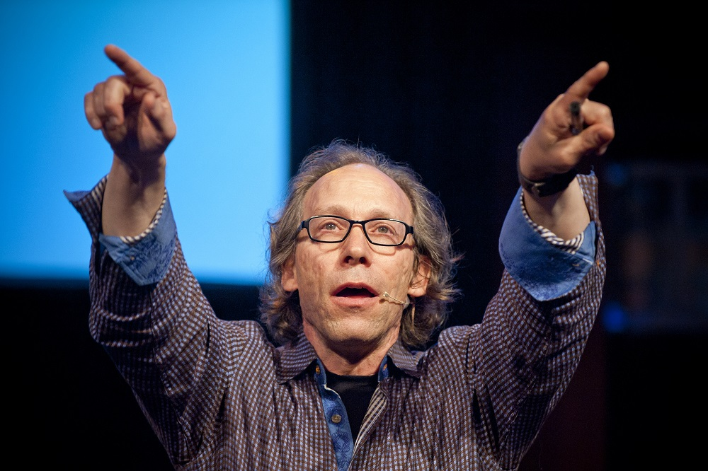
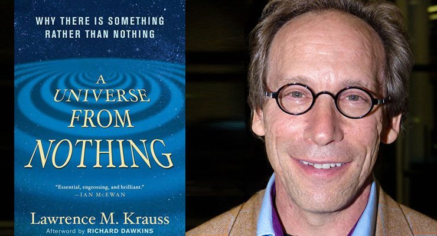
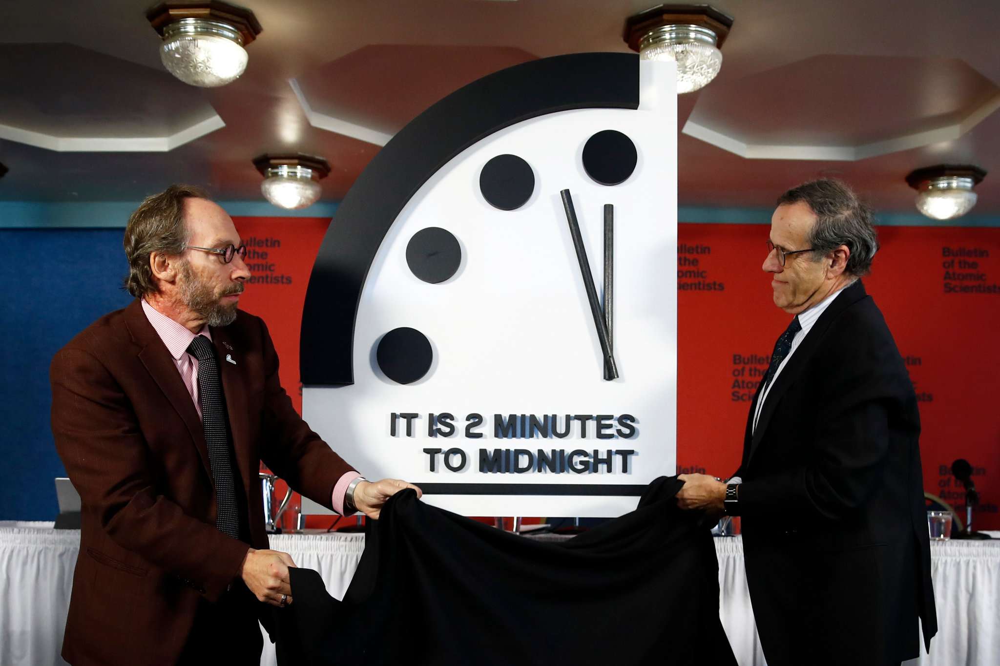
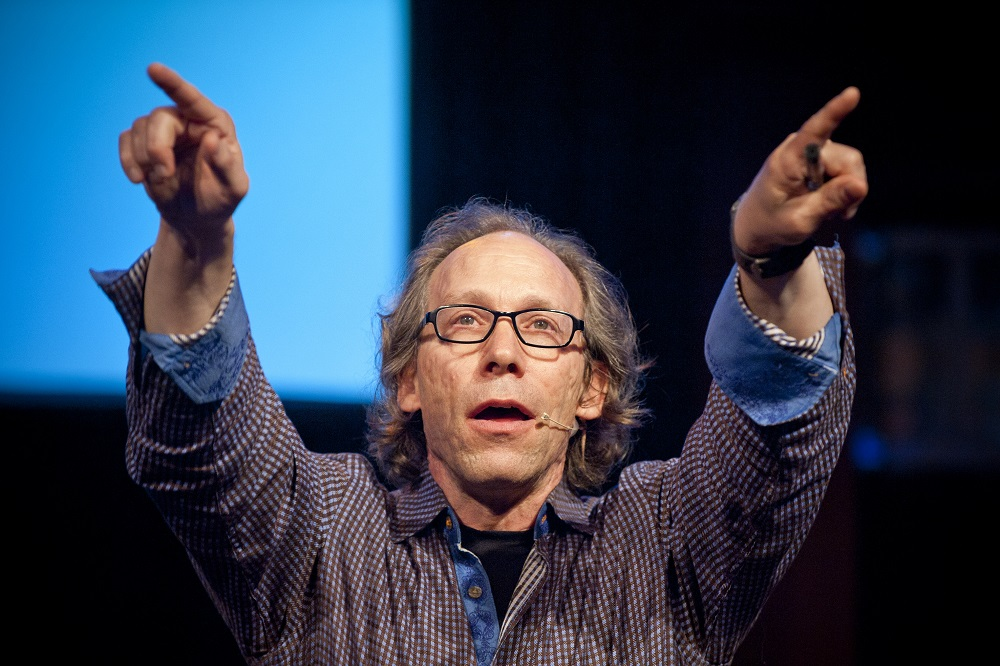
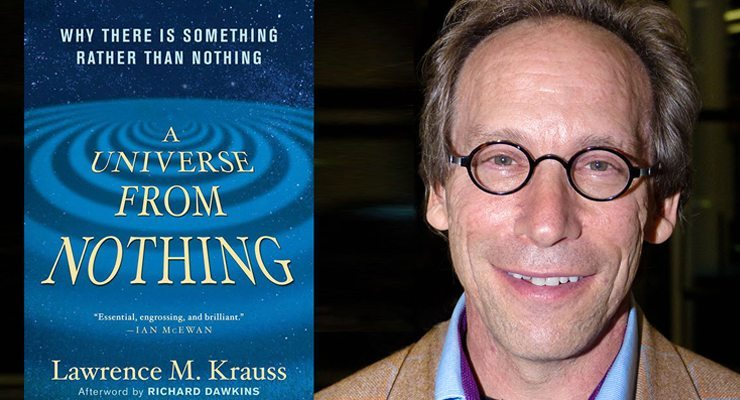
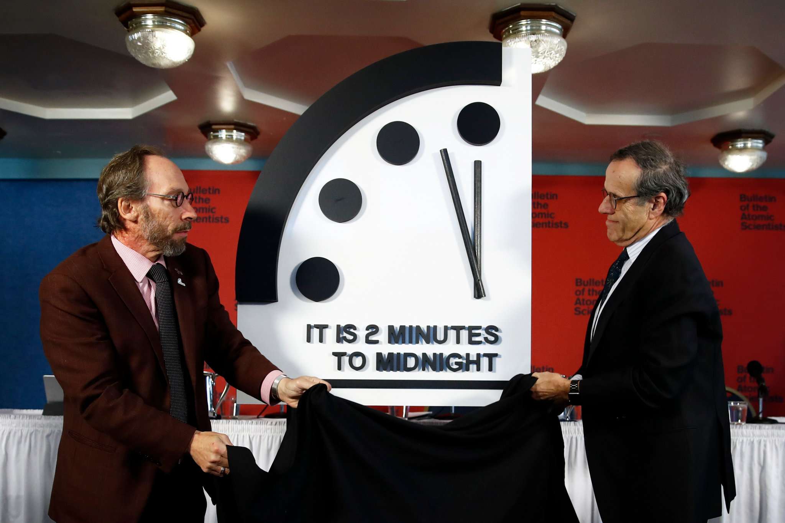

Lawrence Maxwell Krauss (born May 27, 1954) is an American-Canadian theoretical physicist and cosmologist who previously taught at Arizona State University, Yale University, and Case Western Reserve University. He founded ASU's Origins Project, now called ASU Interplanetary initiative, to investigate fundamental questions about the universe and served as the project's director. Upon investigating allegations about sexual misconduct by Krauss, ASU determined that he had violated university policy and removed him from the Origins Project directorship in July 2018. He continued as a Professor at ASU until retiring in May 2019. He currently serves as President of The Origins Project Foundation and as host of The Origins Podcast with Lawrence Krauss.
Krauss is an advocate for public understanding of science, public policy based on sound empirical data, scientific skepticism, and science education. An anti-theist, Krauss seeks to reduce the influence of what he regards as superstition and religious dogma in popular culture.
Krauss is the author of several bestselling books, including The Physics of Star Trek (1995) and A Universe from Nothing (2012), and chaired the Bulletin of the Atomic Scientists Board of Sponsors.